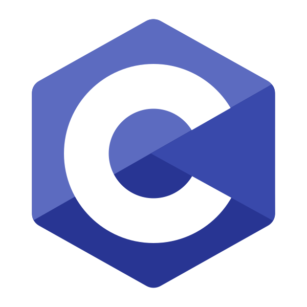

As Linguagens que Movem o Mundo Digital

A Família C: C, C++, C#, Objective-C
A linguagem C é uma das bases da computação moderna, influenciando inúmeras outras linguagens. Conhecida por sua eficiência e controle de baixo nível, é amplamente usada em sistemas operacionais e software embarcado.
C
História e Criação: Desenvolvida por Dennis Ritchie no Bell Labs por volta de 1972. Foi criada com o objetivo específico de reescrever o sistema operacional Unix, buscando uma linguagem que fosse eficiente e portável.
Características: Linguagem procedural, compilada, oferece acesso direto à memória através de ponteiros, alta performance. É considerada a "língua franca" da programação, com a qual muitas outras linguagens e sistemas conseguem interagir.
Aplicações Comuns: Sistemas operacionais (Unix, Linux, Windows kernel), firmware, sistemas embarcados, desenvolvimento de drivers.
Pontos Fortes e Fracos: Sua maior força é o controle de baixo nível e a performance. Sua maior fraqueza é a mesma: o gerenciamento manual de memória é poderoso, mas é uma fonte comum de bugs e vulnerabilidades de segurança (como buffer overflows).
Curiosidade: O kernel da maioria dos sistemas operacionais modernos, incluindo Windows, Linux e macOS, é escrito primariamente em C.
Exemplo de Código (Olá, Mundo em C):
#include <stdio.h>
int main() {
printf("Olá, Mundo!\n");
return 0;
}
C++
História e Criação: Criada por Bjarne Stroustrup, também no Bell Labs, a partir de 1979. Stroustrup queria adicionar recursos de programação orientada a objetos (inspirados em Simula) à linguagem C para criar sistemas complexos de forma mais organizada.
Características: Extensão do C com recursos de programação orientada a objetos (POO), genéricos, exceções, alto desempenho. É uma linguagem multiparadigma, suportando programação procedural, orientada a objetos e funcional.
Aplicações Comuns: Desenvolvimento de jogos (engines como Unreal), software de sistemas, navegadores web, aplicações financeiras de alta frequência.
Pontos Fortes e Fracos: É extremamente rápida e poderosa, mas sua complexidade e a necessidade de gerenciar memória manualmente a tornam difícil de aprender e propensa a erros.
Por que C++ Ainda é o Rei do Desempenho?
Mesmo com o surgimento de linguagens mais modernas, C++ continua sendo a escolha principal para aplicações onde cada nanossegundo conta. Isso se deve a três fatores principais: controle direto sobre a memória, permitindo otimizações que são impossíveis em linguagens com garbage collector; abstrações de custo zero, que permitem escrever código de alto nível que compila para o código de máquina mais eficiente possível; e sua proximidade com o hardware, herdada do C. Esse poder, no entanto, vem com a responsabilidade do gerenciamento manual de memória, uma fonte histórica de bugs complexos.
Curiosidade: O nome "C++" é uma brincadeira com o operador de incremento da linguagem C (`++`), sugerindo que é um passo à frente do C.
Exemplo de Código (Olá, Mundo em C++):
#include <iostream>
int main() {
std::cout << "Olá, Mundo!" << std::endl;
return 0;
}
C#
História e Criação: Desenvolvida pela Microsoft sob a liderança de Anders Hejlsberg e lançada em 2000. Foi criada como parte da iniciativa .NET para ser uma linguagem moderna e orientada a objetos, competindo diretamente com o Java.
Características: Linguagem moderna orientada a objetos, desenvolvida pela Microsoft para a plataforma .NET, tipagem forte, coleta de lixo automática. Com o .NET Core (agora apenas .NET), tornou-se totalmente multiplataforma.
Aplicações Comuns: Desenvolvimento de aplicações Windows, desenvolvimento web (ASP.NET), desenvolvimento de jogos (Unity), aplicações mobile (Xamarin).
Pontos Fortes e Fracos: É uma linguagem robusta, versátil e com um ecossistema poderoso (Unity, .NET). Sua principal fraqueza histórica era a dependência do Windows, mas isso foi em grande parte resolvido.
Curiosidade: O nome "C#" foi inspirado na notação musical, onde um sustenido (#) indica que a nota deve ser tocada um semitom mais alta, sugerindo que C# é um incremento sobre C++.
Exemplo de Código (Olá, Mundo em C#):
using System;
public class Program {
public static void Main(string[] args) {
Console.WriteLine("Olá, Mundo!");
}
}
Objective-C
História e Criação: Criada no início dos anos 1980 por Brad Cox e Tom Love. O objetivo era combinar a robustez do C com a flexibilidade da programação orientada a objetos de Smalltalk. Foi posteriormente adquirida pela NeXT e, mais tarde, pela Apple, tornando-se a principal linguagem para macOS e iOS por décadas.
Características: Extensão do C que adiciona recursos de Smalltalk (programação orientada a objetos baseada em mensagens), tipagem dinâmica e estática. Sua sintaxe é conhecida por ser mais verbosa que a de outras linguagens.
Aplicações Comuns: Desenvolvimento de aplicativos para macOS e iOS (legado, substituído em grande parte por Swift).
Pontos Fortes e Fracos: Seu sistema de mensagens é muito flexível. No entanto, sua sintaxe é verbosa e hoje é considerada obsoleta em favor do Swift.
Curiosidade: Antes da chegada do Swift em 2014, todo o ecossistema de aplicativos da Apple foi construído sobre o Objective-C.
Exemplo de Código (Olá, Mundo em Objective-C):
#import <Foundation/Foundation.h>
int main(int argc, const char * argv[]) {
@autoreleasepool {
NSLog(@"Olá, Mundo!");
}
return 0;
}

Java
Java é uma linguagem de programação orientada a objetos, popular, robusta e independente de plataforma, conhecida pelo seu lema "Write Once, Run Anywhere" (WORA). É amplamente utilizada em aplicações corporativas, desenvolvimento mobile (Android) e sistemas de grande escala.
História e Criação
Criada por James Gosling na Sun Microsystems em 1991, como parte de um projeto chamado "Green". A linguagem, inicialmente chamada de "Oak", foi projetada para dispositivos eletrônicos, mas seu potencial para a web foi rapidamente percebido, levando ao seu lançamento oficial em 1995.
Características: Orientada a objetos, compilada para bytecode (executado na Java Virtual Machine - JVM), gerenciamento automático de memória (garbage collection), tipagem estática forte, grande ecossistema e bibliotecas. A JVM é a chave para sua portabilidade, atuando como uma camada de abstração entre o código e o sistema operacional.
Aplicações Comuns: Aplicações corporativas (backend), desenvolvimento de aplicativos Android, sistemas embarcados, aplicações científicas, Big Data (Hadoop).
Pontos Fortes e Fracos: Sua estabilidade e ecossistema maduro são grandes vantagens. No entanto, pode ser mais verbosa e consumir mais memória do que linguagens mais recentes.
O Legado do "Write Once, Run Anywhere"
A filosofia "Escreva uma vez, rode em qualquer lugar" foi a grande revolução do Java. Antes dele, um programa escrito para Windows não rodava em Mac ou Linux sem ser reescrito. Java resolveu isso com a Java Virtual Machine (JVM), uma camada de software que interpreta o código Java compilado (bytecode) para as instruções nativas do sistema operacional. Isso significava que desenvolvedores podiam criar uma única versão de seu software para rodar em múltiplos sistemas, algo transformador para o mundo corporativo e que pavimentou o caminho para o desenvolvimento de aplicativos Android.
Curiosidade: O nome original da linguagem era "Oak" (Carvalho), inspirado em uma árvore que ficava do lado de fora do escritório de Gosling. Foi renomeada para Java, supostamente por causa do café que os desenvolvedores bebiam.
Exemplo de Código (Classe simples em Java):
class Cachorro {
String nome;
public Cachorro(String nome) {
this.nome = nome;
}
public void latir() {
System.out.println(this.nome + " diz: Au au!");
}
public static void main(String[] args) {
Cachorro meuCachorro = new Cachorro("Rex");
meuCachorro.latir(); // Saída: Rex diz: Au au!
}
}

Python
Python é uma linguagem de programação de alto nível, interpretada, com uma sintaxe clara e legível, o que facilita o aprendizado e a produtividade. Sua vasta biblioteca padrão e o grande número de bibliotecas de terceiros a tornam adequada para diversas tarefas.
História e Criação
Criada por Guido van Rossum no final dos anos 1980, com sua primeira versão lançada em 1991. Van Rossum desenvolveu o Python como um sucessor da linguagem ABC, com foco em simplicidade, legibilidade e código limpo.
Características: Interpretada, tipagem dinâmica, multiparadigma (orientada a objetos, procedural, funcional), grande comunidade e suporte. Sua filosofia "batteries included" (baterias incluídas) significa que sua biblioteca padrão é extremamente rica.
Aplicações Comuns: Desenvolvimento web (Django, Flask), ciência de dados (Pandas, NumPy, Scikit-learn), inteligência artificial e machine learning (TensorFlow, PyTorch), automação de tarefas, scripting.
Pontos Fortes e Fracos: É extremamente fácil de aprender e usar, com um vasto ecossistema de bibliotecas. Sua principal fraqueza é o desempenho, sendo mais lenta que linguagens compiladas para tarefas intensivas.
Por que Python se Tornou Tão Popular?
A ascensão de Python é um fenômeno multifacetado. Primeiramente, sua sintaxe simples e legível diminui a curva de aprendizado, tornando-a a linguagem de entrada para muitos novos programadores. Segundo, sua versatilidade é imensa. Mas o grande catalisador foi a explosão da Ciência de Dados e Inteligência Artificial. Python, com bibliotecas poderosas como Pandas, NumPy e TensorFlow, tornou-se a ferramenta padrão para cientistas de dados e pesquisadores de IA, que valorizam mais a velocidade de desenvolvimento e experimentação do que a performance bruta de execução. Essa tempestade perfeita de simplicidade, poder e relevância em uma área em alta selou sua popularidade.
Curiosidade: O nome não vem da cobra, mas sim do grupo de comédia britânico Monty Python's Flying Circus, do qual Guido van Rossum era fã.
Exemplo de Código (List Comprehension em Python):
# Cria uma lista com o quadrado dos números pares de 0 a 9
numeros_pares_ao_quadrado = [x**2 for x in range(10) if x % 2 == 0]
print(numeros_pares_ao_quadrado) # Saída: [0, 4, 16, 36, 64]

HTML (HyperText Markup Language)
HTML não é uma linguagem de programação, mas sim a linguagem de marcação padrão para criar páginas web. Ela define a estrutura e o conteúdo dos documentos web.
História e Criação
Criado por Tim Berners-Lee em 1991, enquanto trabalhava no CERN. A motivação era criar uma forma simples para que pesquisadores pudessem compartilhar e acessar documentos e informações através da internet.
Características: Linguagem de marcação baseada em tags, estrutura hierárquica, utilizada para criar a semântica do conteúdo web. A versão mais recente, HTML5, introduziu novas tags semânticas (`<article>`, `<section>`, `<nav>`) e APIs para áudio, vídeo e gráficos.
Aplicações Comuns: Criação da estrutura de todas as páginas web, base para aplicações web e interfaces de usuário.
Pontos Fortes e Fracos: É o padrão universal da web e é fácil de aprender. Sua fraqueza é que, sendo apenas para estrutura, não pode criar lógica ou interatividade sozinha.
Curiosidade: A primeira versão do HTML tinha apenas 18 tags. Hoje, existem mais de 100.
Exemplo de Código (Estrutura básica de um documento HTML):
<!DOCTYPE html>
<html lang="pt-BR">
<head>
<meta charset="UTF-8">
<title>Minha Página</title>
</head>
<body>
<h1>Título Principal</h1>
<p>Este é um parágrafo de texto.</p>
</body>
</html>

CSS (Cascading Style Sheets)
CSS é uma linguagem de folhas de estilo usada para descrever a apresentação de um documento HTML (ou XML). Ela controla o layout, cores, fontes e outros aspectos visuais das páginas web.
História e Criação
Proposto pela primeira vez por Håkon Wium Lie em 1994, enquanto também trabalhava no CERN. A ideia era separar o conteúdo (HTML) da sua apresentação visual, permitindo que desenvolvedores tivessem mais controle sobre o design das páginas. Bert Bos foi um co-criador fundamental.
Características: Linguagem de estilo baseada em seletores e regras, permite separar a apresentação da estrutura do conteúdo. O "Cascading" (cascata) refere-se à forma como as regras de estilo são aplicadas com base na especificidade, herança e ordem no código.
Aplicações Comuns: Estilização de páginas web, criação de layouts responsivos (com Flexbox e Grid), animações e efeitos visuais.
Pontos Fortes e Fracos: Permite um controle visual imenso e a reutilização de estilos. Pode se tornar complexa e difícil de gerenciar em projetos grandes (o que leva ao uso de metodologias como BEM ou frameworks como Tailwind CSS).
Curiosidade: O "Cascading" (cascata) refere-se à forma como as regras de estilo de diferentes fontes (navegador, usuário, autor) são aplicadas em uma ordem de prioridade específica para determinar o estilo final de um elemento.
Exemplo de Código (Estilizando um título e um parágrafo):
/* Define a cor do h1 como azul e o alinha ao centro */
h1 {
color: blue;
text-align: center;
}
/* Define o tamanho da fonte e o espaçamento entre linhas do parágrafo */
p {
font-size: 16px;
line-height: 1.5;
}

JavaScript
JavaScript é uma linguagem de programação de alto nível, interpretada, essencial para adicionar interatividade e dinamismo a páginas web. Com Node.js, também é utilizada no desenvolvimento backend.
História e Criação
Criado por Brendan Eich na Netscape em apenas 10 dias em 1995. Foi desenvolvido para ser uma linguagem de script leve para o navegador Netscape Navigator, permitindo interatividade nas páginas web que, até então, eram estáticas.
Características: Interpretada, tipagem dinâmica, orientada a objetos (prototipal), baseada em eventos, roda no navegador (client-side) e no servidor (server-side com Node.js). É a única linguagem que os navegadores web entendem nativamente.
Aplicações Comuns: Interatividade em websites, desenvolvimento de front-end (React, Angular, Vue.js), desenvolvimento de back-end (Node.js), desenvolvimento mobile (React Native).
Pontos Fortes e Fracos: É onipresente na web e possui um ecossistema gigantesco. Suas fraquezas incluem um comportamento peculiar com tipos (coerção) e inconsistências históricas entre navegadores.
De "Brinquedo de Navegador" a Dominador Universal
Inicialmente visto como uma linguagem simples para animações e validação de formulários, a jornada do JavaScript é impressionante. A tecnologia AJAX permitiu que páginas buscassem dados sem recarregar, abrindo caminho para aplicações web complexas. O ponto de virada foi em 2009 com a criação do Node.js, que permitiu que o JavaScript rodasse no servidor. Isso unificou o desenvolvimento: a mesma linguagem podia ser usada no front-end e no back-end. A explosão de frameworks como React, Angular e Vue solidificou seu domínio, tornando-o a linguagem mais versátil do mercado, capaz de rodar em navegadores, servidores, dispositivos móveis e até mesmo em desktops.
Curiosidade: O nome foi uma jogada de marketing para aproveitar a popularidade do Java na época, mas as duas linguagens são fundamentalmente diferentes.
Exemplo de Código (Manipulando o DOM):
// Espera o DOM carregar para executar o script
document.addEventListener('DOMContentLoaded', function() {
// Cria um novo elemento h2
let heading = document.createElement('h2');
heading.textContent = 'Título Gerado por JavaScript';
// Adiciona o novo título ao corpo do documento
document.body.appendChild(heading);
});

TypeScript
TypeScript é um superset de JavaScript que adiciona tipagem estática opcional. Ele é transpilado para JavaScript e ajuda a escrever código mais robusto e fácil de manter, especialmente em projetos grandes.
História e Criação
Desenvolvido e mantido pela Microsoft, foi lançado ao público em 2012. Foi criado pela equipe liderada por Anders Hejlsberg (o mesmo criador do C#) para solucionar as dificuldades de desenvolver aplicações JavaScript em larga escala, adicionando tipos estáticos para detectar erros mais cedo.
Características: Superset de JavaScript, tipagem estática opcional, suporte a interfaces e classes, melhora a escalabilidade e a detecção de erros em tempo de desenvolvimento. O código TypeScript não roda diretamente no navegador; ele é "transpilado" para JavaScript puro.
Aplicações Comuns: Desenvolvimento de front-end (React, Angular, Vue.js), desenvolvimento de back-end (Node.js), aplicações web complexas.
Pontos Fortes e Fracos: Seu principal ponto forte é a segurança de tipo, que previne muitos bugs comuns em JavaScript. A desvantagem é a necessidade de uma etapa de compilação, o que pode tornar o processo de desenvolvimento um pouco mais lento.
Curiosidade: TypeScript não adiciona novos recursos ao JavaScript em tempo de execução. Ele é uma ferramenta de desenvolvimento que verifica o código e depois o converte para JavaScript compatível com os navegadores.
Exemplo de Código (Interface e Função em TypeScript):
// Define um contrato para um objeto do tipo 'Pessoa'
interface Pessoa {
nome: string;
idade: number;
}
function saudar(pessoa: Pessoa): string {
return `Olá, ${pessoa.nome}! Você tem ${pessoa.idade} anos.`;
}
let usuario = { nome: "Maria", idade: 30 };
console.log(saudar(usuario));

Brainfuck
Brainfuck é uma linguagem de programação esotérica minimalista, notável por seu pequeno número de comandos (apenas oito). É primariamente usada para desafiar programadores e explorar os limites da computação.
História e Criação
Criada em 1993 por Urban Müller. Seu objetivo era criar a menor linguagem de programação possível, com um compilador que ocupasse o mínimo de espaço (menos de 200 bytes). Foi projetada para ser Turing complete, mas extremamente difícil de usar na prática.
Características: Oito comandos simples (+, -, >, <, ., [, ]), opera em uma fita de memória (um array de bytes) com um ponteiro. É a definição de uma linguagem minimalista.
Aplicações Comuns: Principalmente para fins educacionais, recreativos e como um desafio na ciência da computação. Não é usada para desenvolvimento de software prático.
Pontos Fortes e Fracos: Sua força é seu minimalismo extremo. Sua fraqueza é ser completamente impraticável e ilegível para qualquer projeto real.
Curiosidade: O próprio nome da linguagem é um aviso sobre a sua dificuldade e a confusão mental que ela pode causar ao tentar programar com ela.
Exemplo de Código (Olá, Mundo em Brainfuck):
++++++++[>++++[>++>+++>+++>+<<<<-]>+>+>->>+[<]<-]>>.>---.+++++++..+++.>>.<-.<.+++.------.--------.>>+.>++.

SQL (Structured Query Language)
SQL é uma linguagem padrão para gerenciar e manipular bancos de dados relacionais. Ela permite consultar, inserir, atualizar e excluir dados.
História e Criação
Desenvolvida por Donald D. Chamberlin e Raymond F. Boyce na IBM no início dos anos 1970. Foi criada com base no modelo relacional de Edgar F. Codd para ser uma linguagem declarativa e acessível para consultar e gerenciar dados em bancos de dados relacionais.
Características: Linguagem de consulta declarativa, focada em operações com conjuntos de dados (tabelas). Isso significa que você descreve *o que* quer, e o banco de dados descobre *como* obter.
Aplicações Comuns: Interação com sistemas de gerenciamento de bancos de dados (MySQL, PostgreSQL, SQL Server, etc.) em praticamente qualquer aplicação que precise armazenar dados estruturados.
Pontos Fortes e Fracos: É uma linguagem poderosa, padronizada e otimizada para consultas de dados. Sua fraqueza é que existem diferentes "dialetos" (T-SQL, PL/SQL) que possuem sintaxes ligeiramente diferentes.
Curiosidade: Embora o nome oficial seja SQL, muitos profissionais ainda o pronunciam como "SEQUEL", uma referência ao nome original da linguagem, que não pôde ser mantido por questões de marca registrada.
Exemplo de Código (Selecionando e ordenando dados):
-- Seleciona o nome e o email de todos os clientes do Brasil,
-- ordenados por nome em ordem alfabética.
SELECT nome, email
FROM clientes
WHERE pais = 'Brasil'
ORDER BY nome ASC;

PHP (Hypertext Preprocessor)
PHP é uma linguagem de script de código aberto muito utilizada para desenvolvimento web server-side. Ela pode ser incorporada diretamente no HTML.
História e Criação
Criada por Rasmus Lerdorf em 1994. Inicialmente, era um conjunto de scripts em C que ele usava para manter sua página pessoal (daí o nome original, "Personal Home Page Tools"). Com o tempo, evoluiu para uma linguagem de programação completa para a web.
Características: Interpretada, tipagem dinâmica, focada em desenvolvimento web. É conhecida por sua facilidade de implantação na maioria dos servidores web e por sua vasta comunidade. O PHP moderno (versões 7 e 8) melhorou muito em performance e recursos de linguagem.
Aplicações Comuns: Desenvolvimento de sites dinâmicos, aplicações web, sistemas de gerenciamento de conteúdo (WordPress, Drupal), e-commerce (Magento).
Pontos Fortes e Fracos: É fácil de aprender e implantar, com uma comunidade massiva. Suas fraquezas históricas incluem inconsistências na linguagem e uma reputação de código desorganizado, embora as versões modernas tenham melhorado drasticamente.
O Motor Incansável da Web e o Efeito WordPress
Apesar de ser frequentemente alvo de críticas, o PHP se recusa a desaparecer. Seu sucesso inicial deve-se à sua simplicidade e ao baixo custo de hospedagem. Mas seu domínio foi consolidado por um único fator: WordPress. O sistema de gerenciamento de conteúdo mais popular do mundo, que alimenta mais de 40% da web, é construído em PHP. Isso criou um ecossistema gigantesco e uma demanda contínua por desenvolvedores. Enquanto o WordPress reinar, o PHP continuará sendo uma força vital e relevante no desenvolvimento web.
Curiosidade: Estima-se que mais de 75% de todos os sites na web cuja linguagem de servidor é conhecida rodam em PHP.
Exemplo de Código (Laço para exibir itens de uma lista):
<?php
$frutas = ["Maçã", "Banana", "Laranja"];
?>
<h1>Lista de Frutas</h1>
<ul>
<?php foreach ($frutas as $fruta): ?>
<li><?= htmlspecialchars($fruta) ?></li>
<?php endforeach; ?>
</ul>

Rust
Rust é uma linguagem de programação de sistemas que se concentra em segurança, velocidade e concorrência. Ela alcança segurança de memória sem garbage collection através de um sistema de propriedade único.
História e Criação
Iniciada como um projeto pessoal por Graydon Hoare em 2006, a linguagem foi adotada e patrocinada pela Mozilla Research a partir de 2009. Rust foi projetada para resolver problemas comuns em C++, como erros de memória e dificuldades com programação concorrente, visando a criação de sistemas seguros e de alta performance.
Características: Compilada, forte ênfase em segurança de memória (sem garbage collector), concorrência sem data races, performance comparável a C++. Seu sistema de "ownership" (propriedade) e "borrowing" (empréstimo) é a chave para garantir segurança em tempo de compilação.
Aplicações Comuns: Desenvolvimento de sistemas operacionais, engines de jogos, ferramentas de linha de comando, aplicações web de alta performance, blockchain.
Pontos Fortes e Fracos: Sua principal força é a garantia de segurança com performance. Sua principal fraqueza é a curva de aprendizado íngreme, especialmente os conceitos de propriedade e tempo de vida (lifetimes).
Rust e a Revolução da Segurança de Memória
Rust oferece uma solução para um dilema clássico da programação: a escolha entre o controle de baixo nível do C/C++ (com risco de bugs de memória) e a segurança do Java/C# (com a sobrecarga de um garbage collector). O "superpoder" de Rust é seu verificador de empréstimos (borrow checker), que faz parte do compilador. Ele analisa o código para garantir que as regras de propriedade (ownership) e empréstimo (borrowing) sejam seguidas. Isso significa que classes inteiras de bugs, como ponteiros nulos e corridas de dados, são eliminadas em tempo de compilação, antes mesmo do programa ser executado. É como ter um especialista em segurança de memória revisando cada linha do seu código, garantindo performance e segurança simultaneamente.
Curiosidade: O nome da linguagem foi inspirado em um grupo de fungos (rust fungi), que são organismos robustos, distribuídos e que sobrevivem em diversos ambientes.
Exemplo de Código (Função que 'empresta' uma string):
// A função 'calcula_tamanho' recebe uma referência (&) para uma String,
// então ela não se torna dona do valor.
fn calcula_tamanho(s: &String) -> usize {
s.len()
}
fn main() {
let s1 = String::from("olá mundo");
let tamanho = calcula_tamanho(&s1);
// 's1' ainda é válida aqui, pois só foi emprestada.
println!("O tamanho de '{}' é {}.", s1, tamanho);
}

R
R é uma linguagem de programação e um ambiente de software para computação estatística e gráficos. É amplamente utilizada por estatísticos e cientistas de dados.
História e Criação
Criada por Ross Ihaka e Robert Gentleman na Universidade de Auckland, Nova Zelândia, em 1993. R foi desenvolvida como uma implementação de código aberto da linguagem S (de estatística), com o objetivo de fornecer uma ferramenta poderosa e acessível para análise de dados e visualização gráfica.
Características: Focada em análise estatística e visualização de dados, grande número de pacotes especializados (disponíveis no CRAN - Comprehensive R Archive Network), interpretada. Suas operações são naturalmente vetorizadas, o que a torna eficiente para manipulação de datasets.
Aplicações Comuns: Análise de dados, modelagem estatística, machine learning, visualização de dados, bioinformática.
Pontos Fortes e Fracos: É imbatível para exploração de dados e estatística. No entanto, pode ser mais lenta e consumir mais memória que outras linguagens para programação de propósito geral.
Curiosidade: O nome "R" tem uma dupla origem: é uma referência à sua predecessora, a linguagem "S", e também vem da primeira letra do nome de seus dois criadores, Ross e Robert.
Exemplo de Código (Criação de um gráfico simples):
# Cria um vetor de dados
pressao_sanguinea <- c(120, 122, 130, 125, 140, 135, 132)
# Cria um vetor de dias da semana
dias <- c("Seg", "Ter", "Qua", "Qui", "Sex", "Sab", "Dom")
# Plota os dados em um gráfico de linhas
plot(pressao_sanguinea, type="o", col="red", xlab="Dia da Semana", ylab="Pressão Sanguínea", main="Variação da Pressão Durante a Semana", xaxt="n")
axis(1, at=1:7, labels=dias)